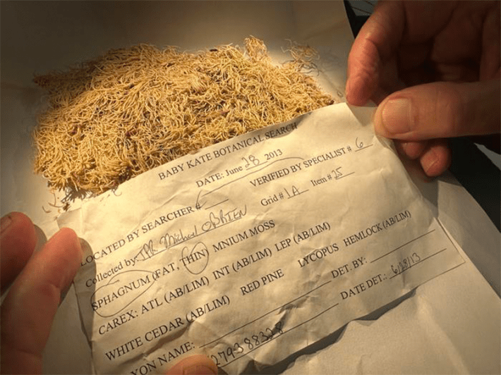

You’ve likely stepped on an unlikely crime solver: Mosses may be low-profile, but they can offer a huge help in closing classes. The mat-like plants and their relatives have previously been used to gauge the timing of people’s deaths and tie suspects to the scene of a crime, among other crucial forensic insights.
Mosses and other members of the bryophytes plant group have served as helpful pieces of evidence in forensic investigations for a few reasons—they dwell in many different habitats, can be linked to specific locations, and easily stick to people’s clothing, vehicles, or other personal items. They’re also easily preserved, and only a wee bit of a bryophyte sample is needed to narrow down the main group the specimen is from.
Despite the valuable secrets they harbor, bryophytes have only been documented in aiding a few reported forensic cases around the world, according to a paper recently published in the journal Forensic Sciences Research.

BOTANICAL CLUES: A dried Sphagnum moss sample that was collected in 2013 during a homicide investigation in Michigan. Photo courtesy of Field Museum.
“We reviewed 150 years of scientific literature to see how these plants have been used in investigations,” said study co-author Matt von Konrat, head of botanical collections at the Field Museum in Chicago, in a statement. “Well, it turns out, the answer was, ‘Not that much.’”
Along with his collaborators, von Konrat encountered several cases where bryophytes were used to calculate the postmortem interval of remains—the time that has passed between one’s death and the discovery of their body—based on these plants’ growth rates. Investigators have also analyzed bryophyte fragments taken from suspects. When investigating a 2001 homicide in Finland, officials there “used recovered bryophyte fragments to link suspects to the scene of the crime where human remains were discovered,” according to the paper.
Read more: “The Curious Case of the Bog Bodies”
During the investigation of the 2011 abduction and homicide of a 4-month-old baby in Michigan, dried mud on a suspect’s shoe contained Sphagnum moss and a collection of other plants that don’t typically grow near each other, leading officials to a specific area to search for the victim’s body. Several of the new paper’s authors were involved in that case. Though the body has not been found, “the analysis and identification of the botanical samples recovered from Phillips’ shoes greatly narrowed down investigators’ search radius.”
Outside of these few examples, the authors note that plants are “underused” in forensic investigations. In fact, few law enforcement professionals are trained to identify and collect any type of botanical samples.
“Plants, and specifically bryophytes, represent an overlooked yet powerful source of forensic evidence that can help investigators link people, places, and events,” study co-author Jenna Merkel, who was pursuing her master’s degree in forensic science at George Washington University during this research, said in the statement. “Through this paper, we aim to raise awareness of forensic botany and encourage law enforcement to recognize the value of even the smallest plant fragments during investigations.” 
EnjoyingNautilus? Subscribe to our free newsletter.
Lead image: Des_Callaghan / Wikimedia Commons